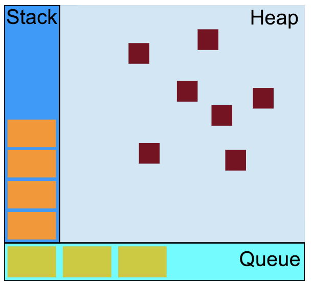
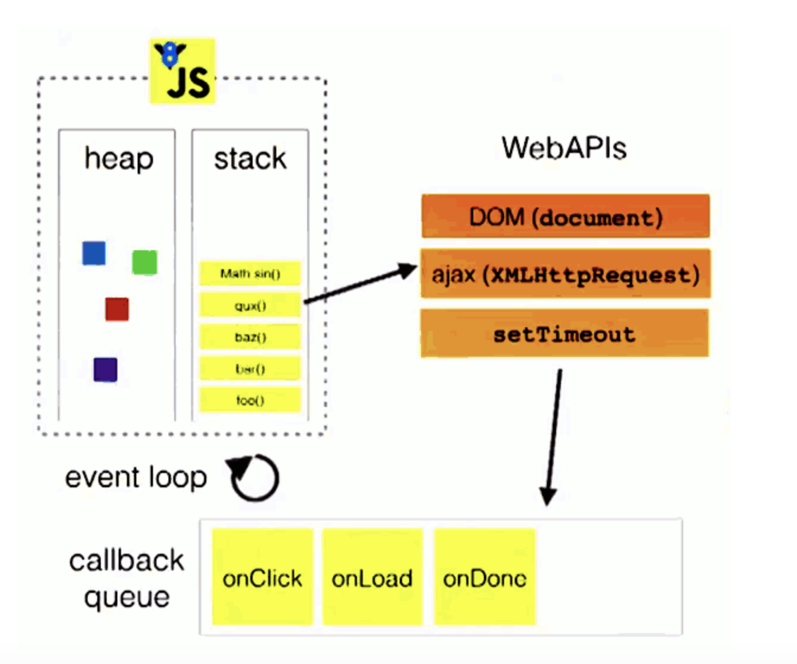

javascript是单线程的语言，也就是说，同一个时间只能做一件事。而这个单线程的特性，与它的用途有关，作为浏览器脚本语言，JavaScript的主要用途是与用户互动，以及操作DOM。这决定了它只能是单线程，否则会带来很复杂的同步问题。比如，假定JavaScript同时有两个线程，一个线程在某个DOM节点上添加内容，另一个线程删除了这个节点，这时浏览器应该以哪个线程为准？
为了利用多核CPU的计算能力，HTML5提出Web Worker标准，允许JavaScript脚本创建多个线程，但是子线程完全受主线程控制，且不得操作DOM。所以，这个新标准并没有改变JavaScript单线程的本质
单线程就意味着，所有任务需要排队，前一个任务结束，才会执行后一个任务。如果前一个任务耗时很长，后一个任务就不得不一直等着
如果在函数返回的时候，调用者就能够得到预期结果(即拿到了预期的返回值或者看到了预期的效果)，那么这个函数就是同步的
如果在函数返回的时候，调用者还不能够得到预期结果，而是需要在将来通过一定的手段得到，那么这个函数就是异步的
正是由于JavaScript是单线程的，而异步容易实现非阻塞，所以在JavaScript中对于耗时的操作或者时间不确定的操作，使用异步就成了必然的选择
一个异步过程通常是这样的：主线程发起一个异步请求，异步任务接收请求并告知主线程已收到(异步函数返回)；主线程可以继续执行后面的代码，同时异步操作开始执行；执行完成后通知主线程；主线程收到通知后，执行一定的动作(调用回调函数)
因此，一个异步过程包括两个要素：注册函数和回调函数，其中注册函数用来发起异步过程，回调函数用来处理结果
一般而言，异步任务有以下三种类型
1、普通事件，如click、resize等
2、资源加载，如load、error等
3、定时器，包括setInterval、setTimeout等
有些文章把消息队列称为任务队列，或者叫事件队列，总之是和异步任务相关的队列 可以确定的是，它是队列这种先入先出的数据结构，和排队是类似的，哪个异步操作完成的早，就排在前面。不论异步操作何时开始执行，只要异步操作执行完成，就可以到消息队列中排队 这样，主线程在空闲的时候，就可以从消息队列中获取消息并执行
当调用bar时，创建了第一个帧 ，帧中包含了bar的参数和局部变量。当bar调用foo时，第二个帧就被创建，并被压到第一个帧之上，帧中包含了foo的参数和局部变量。当foo返回时，最上层的帧就被弹出栈（剩下bar函数的调用帧 ）。当bar返回的时候，栈就空了
对象被分配在一个堆中，即用以表示一个大部分非结构化的内存区域
一个 JavaScript 运行时包含了一个待处理的消息队列。每一个消息都与一个函数相关联。当栈拥有足够内存时，从队列中取出一个消息进行处理。这个处理过程包含了调用与这个消息相关联的函数（以及因而创建了一个初始堆栈帧）。当栈再次为空的时候，也就意味着消息处理结束
1、所有同步任务都在主线程上执行，形成一个执行栈
2、主线程之外，还存在一个"消息队列"。只要异步操作执行完成，就到消息队列中排队
3、一旦执行栈中的所有同步任务执行完毕，系统就会按次序读取消息队列中的异步任务，于是被读取的异步任务结束等待状态，进入执行栈，开始执行
4、主线程不断重复上面的第三步
从代码执行顺序的角度来看，程序最开始是按代码顺序执行代码的，遇到同步任务，立刻执行；遇到异步任务，则只是调用异步函数发起异步请求。此时，异步任务开始执行异步操作，执行完成后到消息队列中排队。程序按照代码顺序执行完毕后，查询消息队列中是否有等待的消息。如果有，则按照次序从消息队列中把消息放到执行栈中执行。执行完毕后，再从消息队列中获取消息，再执行，不断重复。
由于主线程不断的重复获得消息、执行消息、再取消息、再执行。所以，这种机制被称为事件循环
为什么叫事件循环？而不叫任务循环或消息循环。究其原因是消息队列中的每条消息实际上都对应着一个事件
DOM操作对应的是DOM事件，资源加载操作对应的是加载事件，而定时器操作可以看做对应一个“时间到了”的事件